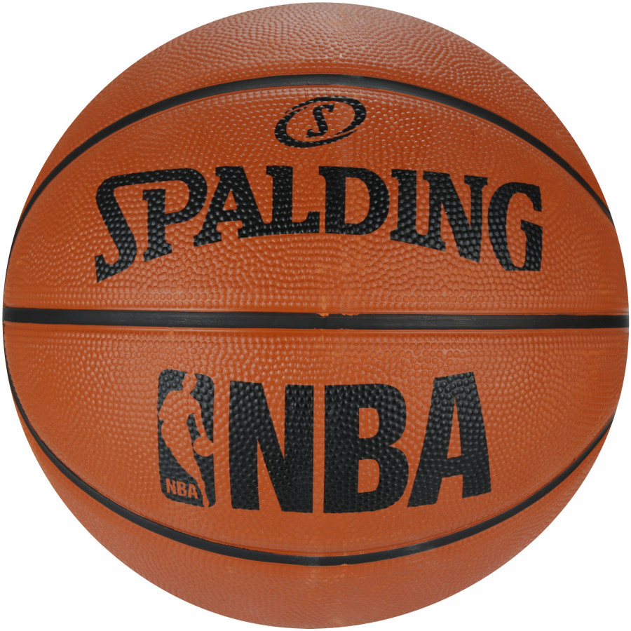
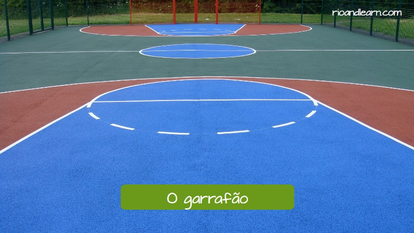
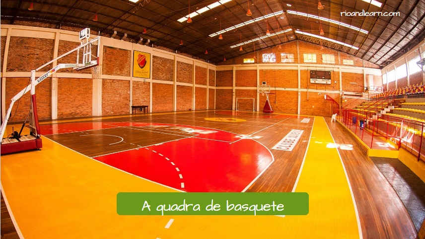
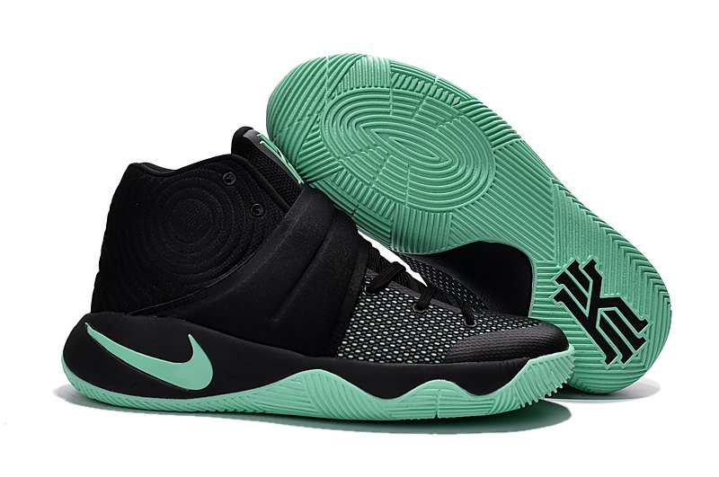
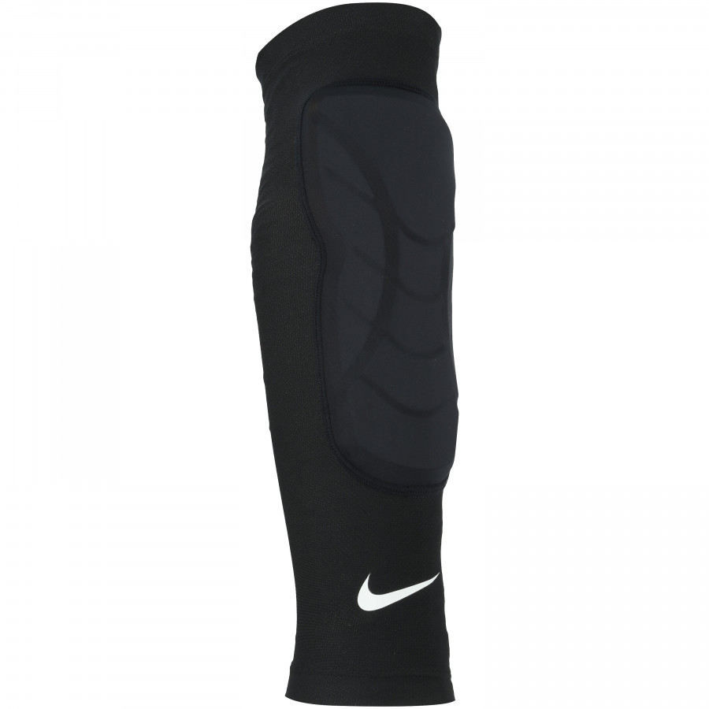
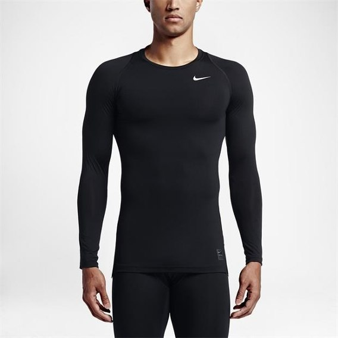

Equipamentos
- Bola
- A bola obviamente fundamental nesse esporte, já que o objetivo do jogo é acertar-la na cesta.Além disso existe uma bola específica para esse esporte, já que ela é maior,mais pesada e 'quica' mais que qualquer bola de outro esporte.

- Garrafão.
- A garrafão é a meta do jogo, na NBA mede 3,1m de altura e o aro, acoplado no garrafão, da cesta mede 45cm de diametro.

- Quadra.
- A quadra está diretamente ligada quantidade de pontos que vale cada arremesso, isso porque ela possui divisórias que são baseadas na distância do aro, quanto mais distante mais pontos, distâncias que vão até 7 metros e os pontos de 1 a 3.

Existem equipamentos que são opcionais, ou seja não são totalmente necessários para fazer essa atividade. É claro que uns são bons que se tenha na partida, mas mesmo assim não são fundamentais. São eles:
- Tênis.
- Existem varías marcas e opções para uso, inclusive existem linhas de jogadores.Eles são bons para evitar alguns tipos de lesões e deixar a partida mais agradével.

- Sleeve.
- Originalmente criado para proteger o cotovelo do jogador Allen Iverson, que tinha acabado de operar.Mas como ele era um atleta muito influente na época, acabou virando moda, sendo possível até colocar na perna atualmente.

- Camisa/Short térmicos.
- Deixam a temperatura do corpo agradável e também seco, são usados por alguns dos jogadores.
